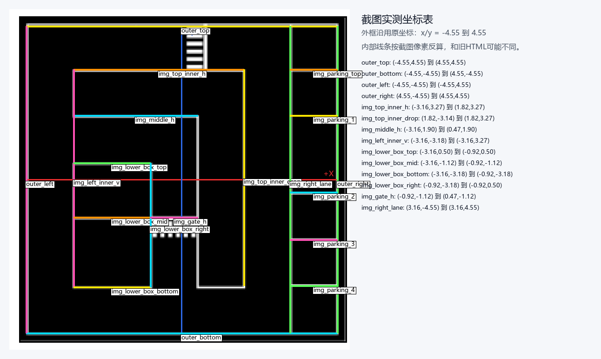

| 对象名 | 中心线 / 占地 | 建议 world 写法 | 说明 |
|---|---|---|---|
| outer_top | (-4.55,4.55) 到 (4.55,4.55) 左下(-4.55,4.52) 到 右上(4.55,4.58) | pose=(0.00,4.55), size=9.10x0.06 | 外框上边，整体大小沿用原坐标 |
| outer_bottom | (-4.55,-4.55) 到 (4.55,-4.55) 左下(-4.55,-4.58) 到 右上(4.55,-4.52) | pose=(0.00,-4.55), size=9.10x0.06 | 外框下边，整体大小沿用原坐标 |
| outer_left | (-4.55,-4.55) 到 (-4.55,4.55) 左下(-4.58,-4.55) 到 右上(-4.52,4.55) | pose=(-4.55,0.00), size=0.06x9.10 | 外框左边，整体大小沿用原坐标 |
| outer_right | (4.55,-4.55) 到 (4.55,4.55) 左下(4.52,-4.55) 到 右上(4.58,4.55) | pose=(4.55,0.00), size=0.06x9.10 | 外框右边，整体大小沿用原坐标 |
| img_top_inner_h | (-3.45,3.55) 到 (1.75,3.55) 左下(-3.45,3.52) 到 右上(1.75,3.58) | pose=(-0.85,3.55), size=5.20x0.06 | 截图上方长横线，按你给的数据修正 |
| img_top_inner_drop | (1.82,-3.14) 到 (1.82,3.27) 左下(1.79,-3.14) 到 右上(1.85,3.27) | pose=(1.82,0.06), size=0.06x6.41 | 截图中间偏右长竖线 |
| img_middle_h | (-2.95,2.35) 到 (0.55,2.35) 左下(-2.95,1.32) 到 右上(0.55,2.38) | pose=(-1.20,2.35), size=3.50x1.06 | 截图中部横线，按你给的数据修正 |
| img_left_inner_v | (-3.16,-3.18) 到 (-3.16,3.27) 左下(-3.19,-3.18) 到 右上(-3.13,3.27) | pose=(-3.16,0.04), size=0.06x6.45 | 截图左侧内部竖线 |
| img_lower_box_top | (-3.16,0.50) 到 (-0.92,0.50) 左下(-3.16,0.47) 到 右上(-0.92,0.53) | pose=(-2.04,0.50), size=2.24x0.06 | 左下矩形上边 |
| img_lower_box_mid | (-3.16,-1.12) 到 (-0.92,-1.12) 左下(-3.16,-1.15) 到 右上(-0.92,-1.09) | pose=(-2.04,-1.12), size=2.24x0.06 | 左下矩形中线 |
| img_lower_box_bottom | (-3.16,-3.18) 到 (-0.92,-3.18) 左下(-3.16,-3.21) 到 右上(-0.92,-3.15) | pose=(-2.04,-3.18), size=2.24x0.06 | 左下矩形下边 |
| img_lower_box_right | (-0.92,-3.18) 到 (-0.92,0.50) 左下(-0.95,-3.18) 到 右上(-0.89,0.50) | pose=(-0.92,-1.34), size=0.06x3.68 | 左下矩形右边 |
| img_gate_h | (-0.92,-1.12) 到 (0.47,-1.12) 左下(-0.92,-1.15) 到 右上(0.47,-1.09) | pose=(-0.22,-1.12), size=1.39x0.06 | 中部短横栅栏所在横线 |
| img_right_lane | (3.16,-4.55) 到 (3.16,4.55) 左下(3.13,-4.55) 到 右上(3.19,4.55) | pose=(3.16,0.00), size=0.06x9.10 | 右侧车道主竖线 |
| img_parking_top | (3.16,3.27) 到 (4.55,3.27) 左下(3.16,3.24) 到 右上(4.55,3.30) | pose=(3.86,3.27), size=1.39x0.06 | 右侧停车格上横线 |
| img_parking_1 | (3.16,1.90) 到 (4.55,1.90) 左下(3.16,1.87) 到 右上(4.55,1.93) | pose=(3.86,1.90), size=1.39x0.06 | 右侧停车格横线 1 |
| img_parking_2 | (3.16,-0.37) 到 (4.55,-0.37) 左下(3.16,-0.40) 到 右上(4.55,-0.34) | pose=(3.86,-0.37), size=1.39x0.06 | 右侧停车格横线 2 |
| img_parking_3 | (3.16,-1.78) 到 (4.55,-1.78) 左下(3.16,-1.81) 到 右上(4.55,-1.75) | pose=(3.86,-1.78), size=1.39x0.06 | 右侧停车格横线 3 |
| img_parking_4 | (3.16,-3.14) 到 (4.55,-3.14) 左下(3.16,-3.17) 到 右上(4.55,-3.11) | pose=(3.86,-3.14), size=1.39x0.06 | 右侧停车格横线 4 |